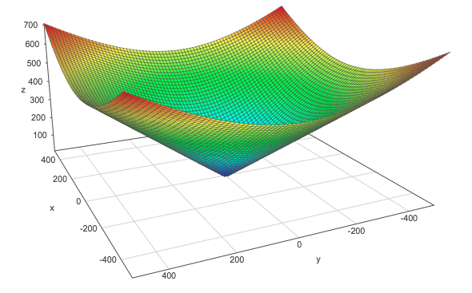
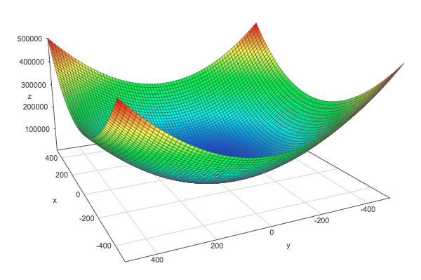
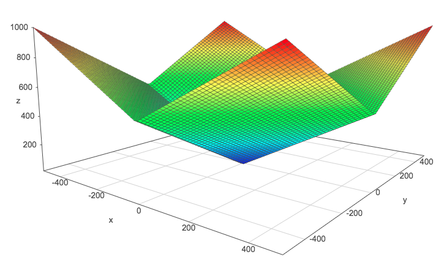

2.5 Norms#
Show code cell source
import numpy as np
import matplotlib.pyplot as plt
import seaborn as sns
Show code cell source
# Plot parameters
sns.set()
%pylab inline
pylab.rcParams['figure.figsize'] = (4, 4)
plt.rcParams['xtick.major.size'] = 0
plt.rcParams['ytick.major.size'] = 0
# Avoid inaccurate floating values (for inverse matrices in dot product for instance)
# See https://stackoverflow.com/questions/24537791/numpy-matrix-inversion-rounding-errors
np.set_printoptions(suppress=True)
Show code cell output
Populating the interactive namespace from numpy and matplotlib
The previous chapter was heavy but this one is light. We will however see an important concept for machine learning and deep learning. The norm is what is generally used to evaluate the error of a model. For instance it is used to calculate the error between the output of a neural network and what is expected (the actual label or value). You can think of the norm as the length of a vector. It is a function that maps a vector to a positive value. Different functions can be used and we will see few examples.
Norms are any functions that are characterized by the following properties:
1- Norms are non-negative values. If you think of the norms as a length, you easily see why it can’t be negative.
2- Norms are \(0\) if and only if the vector is a zero vector
3- Norms respect the triangle inequality. See bellow.
4- \(\norm{\bs{k}\cdot \bs{u}}=| \bs{k}| \cdot \norm{\bs{u}}\). The norm of a vector multiplied by a scalar is equal to the absolute value of this scalar multiplied by the norm of the vector.
It is usually written with two horizontal bars: \(\norm{\bs{x}}\)
The triangle inequality#
The norm of the sum of some vectors is less than or equal to the sum of the norms of these vectors.
Example 1.#
and
Let’s check these results:
u = np.array([1, 6])
u
array([1, 6])
v = np.array([4, 2])
v
array([4, 2])
u+v
array([5, 8])
np.linalg.norm(u+v)
9.433981132056603
np.linalg.norm(u)+np.linalg.norm(v)
10.554898485297798
u = [0,0,1,6]
v = [0,0,4,2]
u_bis = [1,6,v[2],v[3]]
w = [0,0,5,8]
plt.quiver([u[0], u_bis[0], w[0]],
[u[1], u_bis[1], w[1]],
[u[2], u_bis[2], w[2]],
[u[3], u_bis[3], w[3]],
angles='xy', scale_units='xy', scale=1, color=sns.color_palette())
# plt.rc('text', usetex=True)
plt.xlim(-2, 6)
plt.ylim(-2, 9)
plt.axvline(x=0, color='grey')
plt.axhline(y=0, color='grey')
plt.text(-1, 3.5, r'$||\vec{u}||$', color=sns.color_palette()[0], size=20)
plt.text(2.5, 7.5, r'$||\vec{v}||$', color=sns.color_palette()[1], size=20)
plt.text(2, 2, r'$||\vec{u}+\vec{v}||$', color=sns.color_palette()[2], size=20)
plt.show()
plt.close()
P-norms: general rules#
Here is the recipe to get the \(p\)-norm of a vector:
Calculate the absolute value of each element
Take the power \(p\) of these absolute values
Sum all these powered absolute values
Take the power \(\frac{1}{p}\) of this result
This is more condensly expressed with the formula:
This will be clear with examples using these widely used \(p\)-norms.
The \(L^1\) norm#
\(p=1\) so this norm is simply the sum of the absolute values:
The Euclidean norm (\(L^2\) norm)#
The Euclidean norm is the \(p\)-norm with \(p=2\) which may be the more used norm (\(L^2\) norm).
Let’s see an example of this norm:
Example 2.#
Graphically, the Euclidean norm corresponds to the length of the vector from the origin to the point obtained by linear combination (like applying Pythagorean theorem).
So the \(L^2\) norm of \(\bs{u}\) is \(5\).
The \(L^2\) norm can be calculated with the linalg.norm function from numpy. We can check the result:
np.linalg.norm([3, 4])
5.0
Here is the graphical representation of the vectors:
u = [0,0,3,4]
plt.quiver([u[0]],
[u[1]],
[u[2]],
[u[3]],
angles='xy', scale_units='xy', scale=1)
plt.xlim(-2, 4)
plt.ylim(-2, 5)
plt.axvline(x=0, color='grey')
plt.axhline(y=0, color='grey')
plt.annotate('', xy = (3.2, 0), xytext = (3.2, 4),
arrowprops=dict(edgecolor='black', arrowstyle = '<->'))
plt.annotate('', xy = (0, -0.2), xytext = (3, -0.2),
arrowprops=dict(edgecolor='black', arrowstyle = '<->'))
plt.text(1, 2.5, r'$\vec{u}$', size=18)
plt.text(3.3, 2, r'$\vec{u}_y$', size=18)
plt.text(1.5, -1, r'$\vec{u}_x$', size=18)
plt.show()
plt.close()
In this case, the vector is in a 2-dimensional space but this stands also for more dimensions.
The squared Euclidean norm (squared \(L^2\) norm)#
The squared \(L^2\) norm is convenient because it removes the square root and we end up with the simple sum of every squared values of the vector.
The squared Euclidean norm is widely used in machine learning partly because it can be calculated with the vector operation \(\bs{x}^\text{T}\bs{x}\). There can be performance gain due to the optimization See here and here for more details.
Example 3.#
x = np.array([[2], [5], [3], [3]])
x
array([[2],
[5],
[3],
[3]])
euclideanNorm = x.T.dot(x)
euclideanNorm
array([[47]])
np.linalg.norm(x)**2
47.0
It works!
Derivative of the squared \(L^2\) norm#
Another advantage of the squared \(L^2\) norm is that its partial derivative is easily computed:
Derivative of the \(L^2\) norm#
In the case of the \(L^2\) norm, the derivative is more complicated and takes every elements of the vector into account:
One problem of the squared \(L^2\) norm is that it hardly discriminates between 0 and small values because the increase of the function is slow.
We can see this by graphically comparing the squared \(L^2\) norm with the \(L^2\) norm. The \(z\)-axis corresponds to the norm and the \(x\)- and \(y\)-axis correspond to two parameters. The same thing is true with more than 2 dimensions but it would be hard to visualize it.
\(L^2\) norm:

The L2 norm
Squared \(L^2\) norm:

The squared L2 norm
\(L^1\) norm:

The L1 norm
These plots are done with the help of this website. Go and plot these norms if you need to move them in order to catch their shape.
The max norm#
It is the \(L^\infty\) norm and corresponds to the absolute value of the greatest element of the vector.
Matrix norms: the Frobenius norm#
This is equivalent to take the \(L^2\) norm of the matrix after flattening.
The same Numpy function can be use:
A = np.array([[1, 2], [6, 4], [3, 2]])
A
array([[1, 2],
[6, 4],
[3, 2]])
np.linalg.norm(A)
8.366600265340756
Expression of the dot product with norms#
Example 4.#
and
x = [0,0,0,2]
y = [0,0,2,2]
plt.xlim(-2, 4)
plt.ylim(-2, 5)
plt.axvline(x=0, color='grey', zorder=0)
plt.axhline(y=0, color='grey', zorder=0)
plt.quiver([x[0], y[0]],
[x[1], y[1]],
[x[2], y[2]],
[x[3], y[3]],
angles='xy', scale_units='xy', scale=1)
plt.text(-0.5, 1, r'$\vec{x}$', size=18)
plt.text(1.5, 0.5, r'$\vec{y}$', size=18)
plt.show()
plt.close()
We took this example for its simplicity. As we can see, the angle \(\theta\) is equal to 45°.
and
Here are the operations using numpy:
# Note: np.cos take the angle in radian
np.cos(np.deg2rad(45))*2*np.sqrt(8)
4.000000000000001
Papers#
Using Block Norm in Sparse Optimization for Super-Resolution, By R. Hamedi, M. Amintoosi and M. Zaferanieh